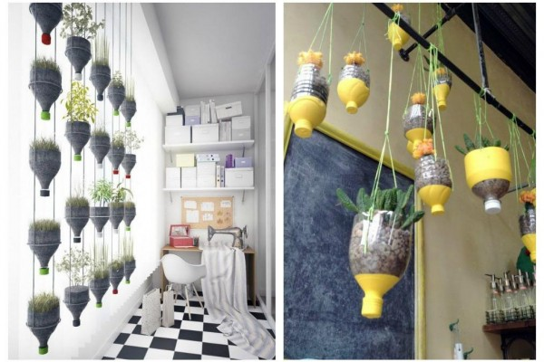
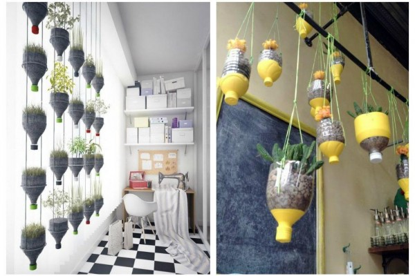

REFILL
Refill is similar to reuse because we’re encouraged to use containers again.
One way to refill that you may have not considered is using your own containers when buying food in bulk.
Take a clean and dry quart-size glass jar with a lid to the store and have them calculate the tare weight.
Then fill up the jar with your chosen food and check out as usual. The jar will be the storage container for
the food at home that when empty can be taken to the store and filled again.
Refill is the optimization using of a tool being re-channeled into being another tool, usually for a purpose unintended by the original tool-maker.
Typically, refill methode is to maximize the usage of items that can be used.
A good example of this would be the Soap Refill Pack, we just have to buy the refill and put into Shower Bottles.
Reuse is not limited to repeated uses for the same purpose.
Examples of refill include using same Tupperwares to store our meals as we dont need to get a new plastic bags as purchasing every meals.
Not all refill is necessarily environmentally friendly, take for instance the idea of refill the bad condition items,
in which their chemical will affect user healthy. Every items have periods of usage based on manufacturing process and materials.
For the sake of environment, we as the users should know the recycling codes for plastic.
SHORT VIDEO ON HOW TO REFILL
PICTURE THAT ITEMS BEING REFILL
 
